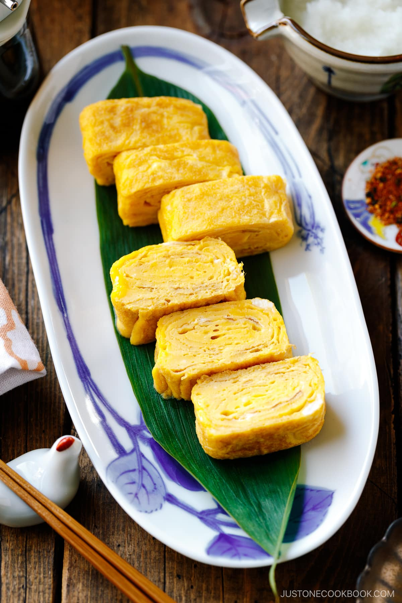

3-Ingredient Simple Tamagoyaki

Tamagoyaki, the Japanese rolled omelette, is known for its bright yellow, miniature pillow-shaped appearance. This petite egg dish is ubiquitous in Japan and is a favored option for breakfast or as a filling for bento boxes. The preparation involves rolling thin layers of seasoned and slightly sweetened egg mixture to create a compact, rectangular shape.
Ingredients
MAIN
- 3 large eggs (50 g each w/o shell)
- 1 tsp usukuchi (light-colored) soy sauce (or regular soy sauce; use GF soy sauce for gluten-free)
- 1/2 Tbsp sugar (for a sweeter tamagoyaki, use up to 1 Tbsp)
OTHER
- 1 Tbsp neutral oil for cooking(plus more, if needed)
- 1 Tbsp water (optional; for a fluffier omelette)
- salt to taste
Instructions
- Mix in a measuring cup or bowl with a pouring spout add the 3 large eggs and sugar. (I like to add 1 pinch salt as well). Then, add 1 tsp usukuchi (light-colored) soy sauce and 1 Tbsp water.
- Heat the tamagoyaki pan over medium heat. Dip a silicone brush or folded paper towel in some neutral oil and apply a thin layer to the pan. To check if the oil is hot enough, use the “sizzle“ test: Put a drop of the egg mixture in the pan; when you hear a sizzling sound, the pan is ready.
- Pour in a thin layer of egg mixture. Quickly tilt the pan to coat the entire cooking surface with egg. Add just enough to fill the pan and don‘t overpour. For my pan size, I had enough to cook 4 thin layers of egg mixture; you may have more or fewer layers, depending on your pan size. Pop any air bubbles (I use cooking chopsticks). Tilt the pan again to distribute the egg mixture evenly.
- Once the bottom of the egg has set and the top is soft but no longer runny, start rolling the egg into a log shape with a spatula (or cooking chopsticks). Start from the far side of the pan and roll toward the pan handle. Don‘t worry about making a perfect roll at this stage
- Lightly grease the far side of the pan. Then, push the omelette back to the far side.
- Lightly grease the front side of the pan. Use the sizzle test to see if the oil is hot enough. When the pan is ready, pour a second thin layer of the egg mixture to just cover the entire cooking surface and repeat step 3, then 4.
- Continue to repreat this process till you have around 4+ layers. Once you‘re finished rolling, press down on the omelette to flatten. Push it against the sides of the pan to shape it into a nice rectangular block. You can brown the omelette a bit, to your preference.
- Transfer the Tamagoyaki to a cutting board. To help set its shape, wrap the Tamagoyaki with a bamboo sushi mat (optional) while it’s still hot. Let it stand for 5 minutes (optional) to allow the residual heat to finish cooking the egg and to cool slightly. To serve, cut the Tamagoyaki in half crosswise, then cut each half into thirds. Enjoy!
Nutrition Info (per serving)
Home